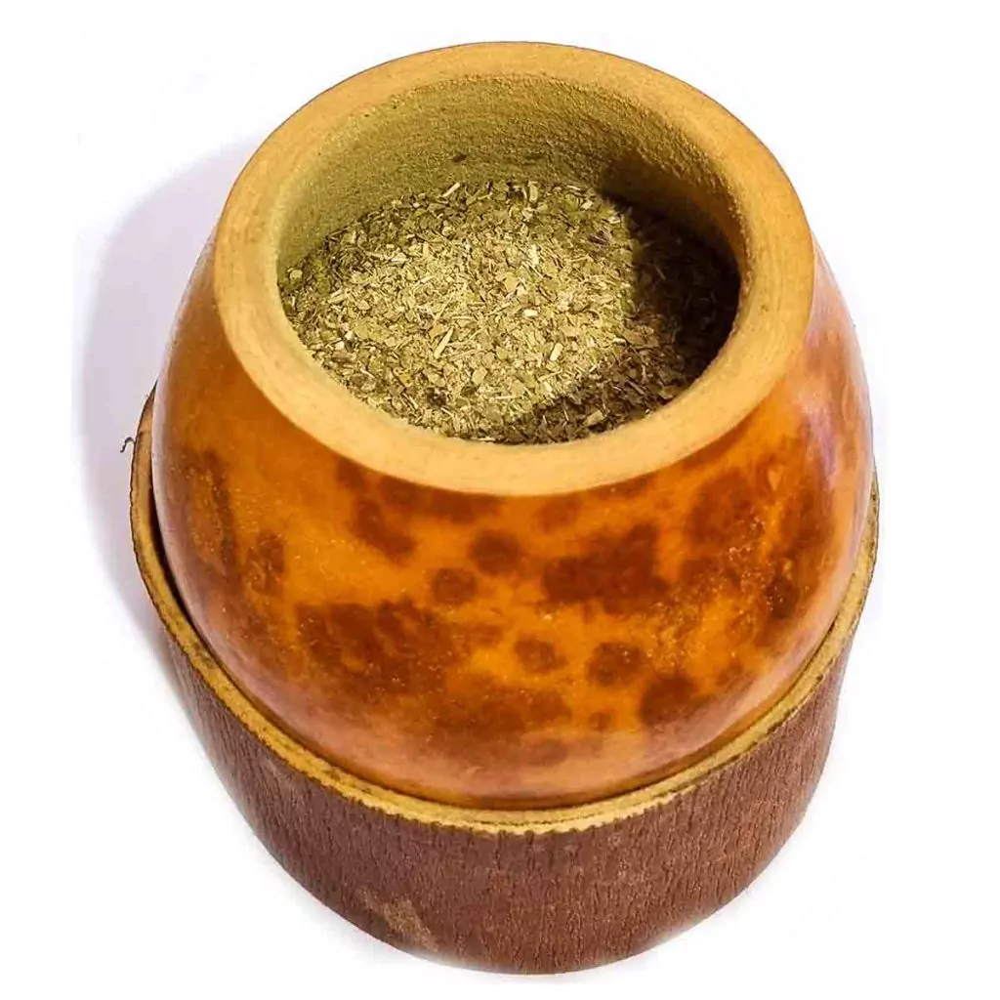
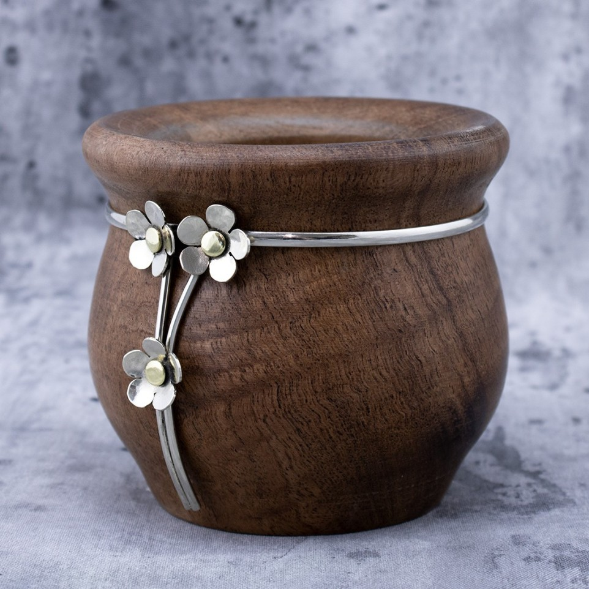
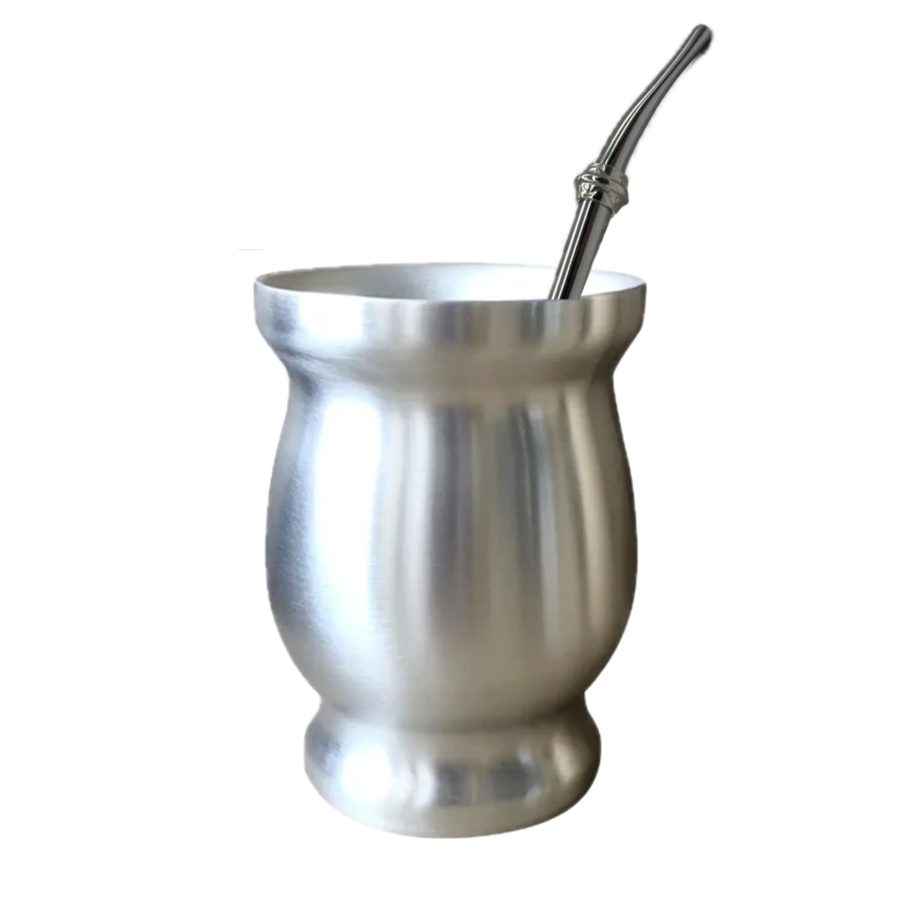
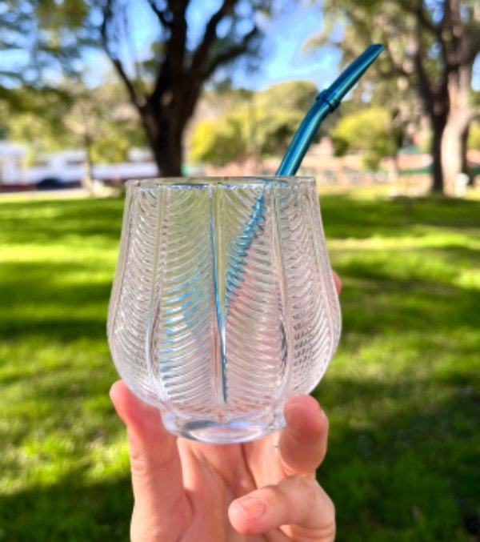
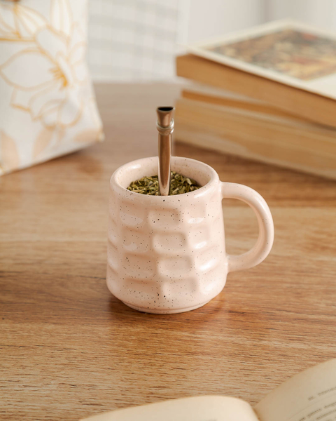
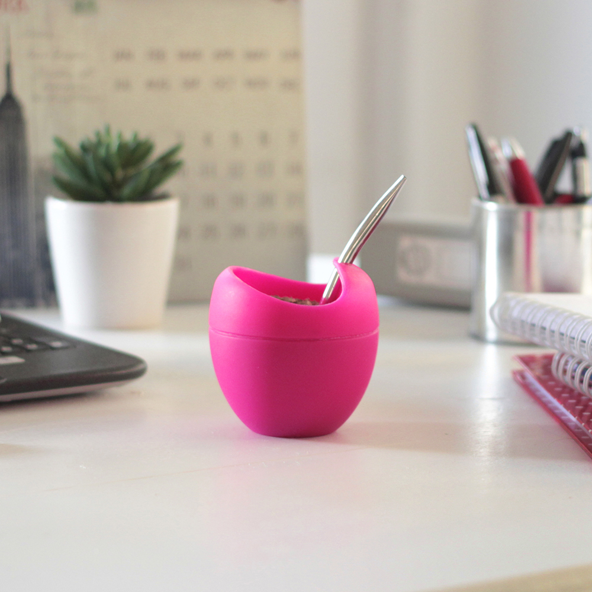

Tipos de Mate y Yerba
Hay distintos tipos de mate que se diferencian principalmente según el material con el que están elaborados. Cada uno ofrece una manera particular de disfrutar esta bebida tradicional.
Hay distintos tipos de mate que se diferencian principalmente según el material con el que están elaborados. Cada uno ofrece una manera particular de disfrutar esta bebida tradicional.

-Se hace con un fruto seco de la planta llamada Lagenaria siceraria (el porongo), ahuecado y curado.Conserva el sabor clásico, algunos dicen que «cura» mejor la yerba.Requiere curado antes del primer uso (poner yerba húmeda varios días) para sellar los poros.Puede tener anillos metálicos (alpaca o acero) y a veces patas.

-Muy popular, de maderas como algarrobo, quebracho o palo santo.Conservan y hasta potencian sabores por la resina o aroma de la madera.También se curan antes del uso.Hay mates tallados muy decorativos.

-De acero inoxidable, aluminio o incluso plata.No necesitan curado y son muy duraderos.No retienen tanto el sabor de la yerba.

-Generalmente viene con forro de cuero o de metal para protegerlo.Fácil de limpiar, no retiene sabores, ideal para distintas infusiones.No requiere curado.

-Suelen tener colores o dibujos muy vistosos.Son fáciles de lavar, no toman olor.Son más frágiles y no conservan tanto el calor.

-Modernos, flexibles y resistentes.Ideales para viajes o camping.No alteran el sabor, pero algunos puristas no los prefieren